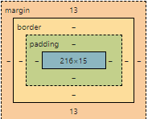

css
so okay css. we can add an id to any
thing in html and we can call it in the
css file using # and we can also put a class
and it will be mention in css using . yse a dot
and * means all elements.
= descendant
> = child
~ = general sibling
+ - adjacent sibling
we can add a word after an element that trigger something
for example : h1:hover this will trigger when hover over
a h1 elemnt there is also a:link used to change the propties
of a link and there is :active this trigger when the mouse is
holding the element and visited which mark a visited websites
more on that Here.
we can also add not to any of these to reverse the order
after an element we can add :: then a keyword to do some crazy stuff
for example ::frirt-letter to target a first letter of something
::firist line , there is also ::selection we can change a selection
::before at the begning of a st ::after at the end.
- -color
- it changes color of text and can be
used to alot of things i thinK?
- -background-color
- it changes the background color
- -font-family
- used to change font of a text
- -font-size
- can change the size of the text we can use alot of
mesuresment for it like em which 1em means 100% we
can also get fonts from google or other stuff.
- -font-weight
- it changes how bold or narrow the text is
- -font-style
- makes the font maybe italic or other kind of styles
- -border-style
- create and changes the style of the border by default its solid
- -border-width
- changes the thickness of the the border
- -border-color
- changes border color
- -border
- this create a border with all the three
propties above and the the syntex goes like this
border: "-border-width" "-border-style" "-border-color"
for example:
border: 3px solid white;
- -border-radius
- changes how round the border is max is 20px
- -border-bottem
- as well as -border-top, -border-right, border-left
they make a border on a spesfic direction and they
share the same syntex as '-border'
- -text-shadow
- makes shadows for a text and the syntex goes like things
-text-shadow : width height blur color , and we can add more
shadows to the text using commaa for example:
text-shadow : 3px 3px 5px red , 2px 2px 0px blue
- -box-shadow
- same as -text-shadow.
- -margin
- this is a margin which is like
the outer layer of an onion it can be changed in pixels
and there is also margin-bottm margin-right etc......
and there is also auto we can apply to margin which is can be used to make
something in the middel for example
- -float
- we can do floar: left; or right this will make text is beside a pic
like on the pic above
- -overflow
- the -overflow prevents text or items to overflow from
a specfic box "its better to asign the height of the box before doing it"
and there is diffrent types of overflows like:
visble, hidden, clip, scroll, auto
- -display
- propety specfiy how if /how and elment is displayed
for example :
display : inline; this will make the div or span or whatever
inline of the text besides it
,block will make the text a block like the div which means you can
apply a width and a height to it .
and none it make the element invisible and make it like it didnt exict
- -visibility
- we can set it to hidden but it doesnt make the elment
vanish it just make it invisible but it will still exict
- -position
- this can get 5 values firist is
relative: and this mean that the elemnt will be
positioned relative to it staring point.fixed:
and this position the element relative to the viewport
absolute:positioned relative to the nearest ancestor
the ancestor is like an elemnt inside a class for example a box
and the elemnt is positioned in this box.sticky:
which makes the element in it postion untill we scroll down then it
will be in top of the screenstatic:the default postion
of the element. note that to change the postion we gotta use top , bottom
, left , right.
- -background-image
- id adds a background image using this syntex:
background-image : url(the_background_image);
but if we made the background-image low resloution it will
be repeated to make it not we add background-repeat : no-repeat;
we can also position it using background-postion and like the
postion : fixed propety we also have it in background background-attachment
but after we done the picture will still be awful and not acullaly fixed so to do that
we add this:
background-size: cover;.